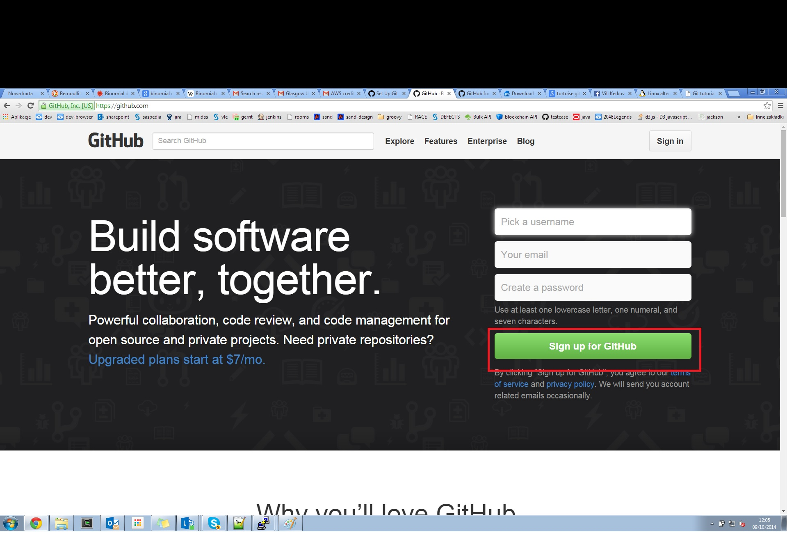
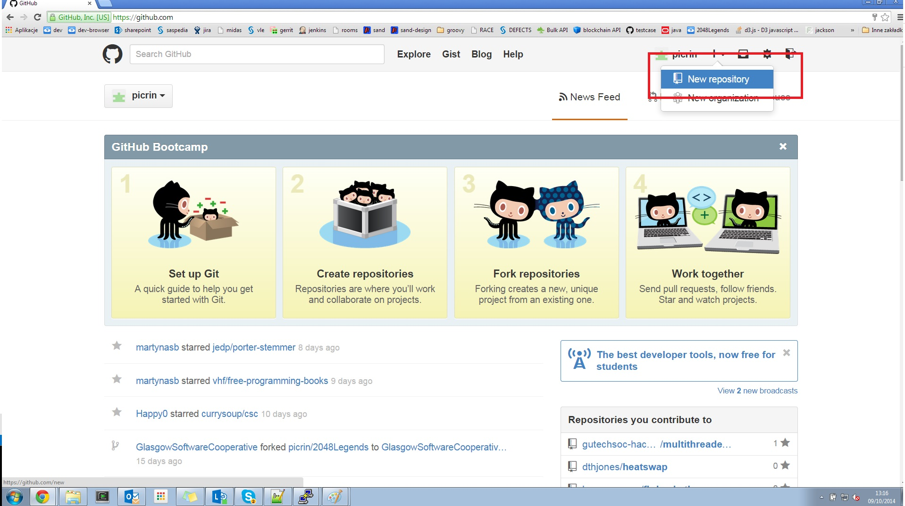
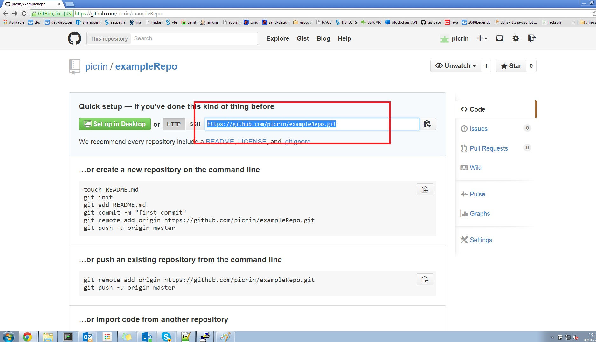
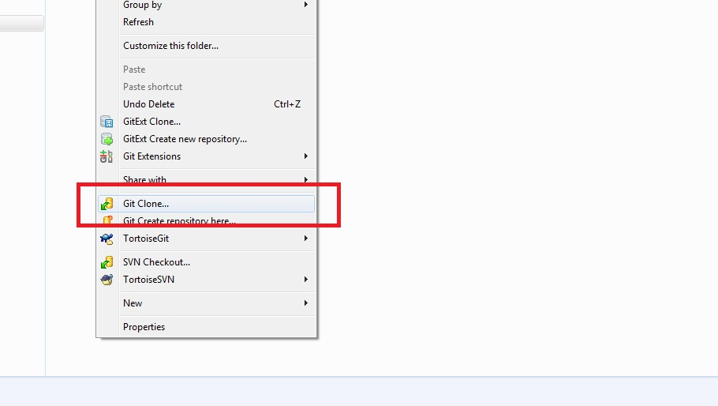
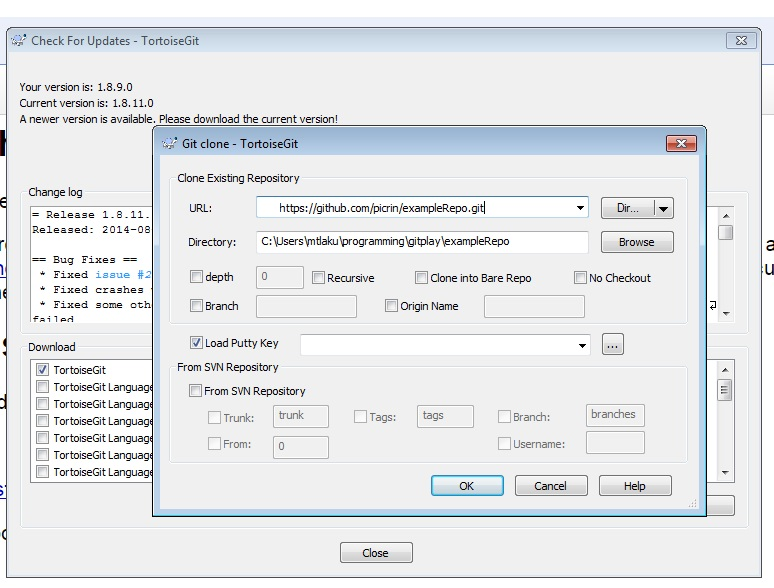

Glasgow University Tech Society - Git tutorial
Top
Why use a Source Code Repository
Some of the reasons for using source code repository are
- Preserve code to allow rollback
- Allows indentification of changes between versions
- Allows collaboration between more than one developer
- Allows code to be preserved on a seperate system to protect against disaster
- ....
Why GIT?
GIT is only one amongst many Source Code repository tools. They all have their advantages/disadvantages.
Some of the features of GIT are
- Distributed Repository
- multiple copies of the data at different locations
- Manual control of when copies of the repository are updated
- Full control of revisions within the local repository
- Powerful branching mechanism
- Very powerful - "With great power comes ...... "
Top
Setting up github account
You need to create a github account to get a free place to keep source code for your open-source projects. github.com. The process is straightforward and guided by github.

Top
Creating github project
After you log in, you need to create a git repository to be able to collaborate with your team. You need only one project per team, but just to practice everybody can create one now.

Repository's URL
You need to copy your repository's URL, to use your project with Tortoise Git.

Top
Setting up TortoiseGit
To install follow the instructions at code.google.com/p/tortoisegit
Cloning Step 1
You can then clone the repository you have created.

Cloning Step 2
You'll have to use the URL you have created.

Top
The workflow
TortoiseGit drop-down you've seen before has got a few useful options: commit, pull and push. Graeme will explain how all of them work, and give you a task, which will boil down to:
- Using one of your team's repositories to collaborate on
- adding a non-conflicting file to the repository (for example using your own name), commiting it and pushing it
- Resolving an expected conflict by applying a merge
- Trying to modify one of your friends files by resolving merge conflicts
Steps:
- Using TortoiseGit (or equivalent on your OS or GIT Bash) clone the repository set up on GitHub by one of team members.
- Create a file in your local clone of the repository. Call it
<username>.txt
- Edit the file and place a line of text in the file "Hello World from <username>"
- Add the file to your local repository
- Commit the file into your local repository
- In turns within your team
- Push your local repository up to the remote repository
- After the first person has pushed the second person will get an error
- To resolve this error pull the remote repository down again and then push
- Everyone in the team should now do a pull from the remote repository
- Within the team pick one of the files that has been created
- Everyone in the team edit the file and add the line "Hello World from <username>"
- Commit this change into your local repository
- Push your local repository up to the remote repository
- After the first person has pushed the second person will get an error
- To resolve this error pull the remote repository down again
- This time you get what is known as a conflict
- Using TortoiseGit Edit and resolve the conflict
- Push the resolved file back to the remote repository
- Repeat for all team members
- Quick demonstration of branching
Top